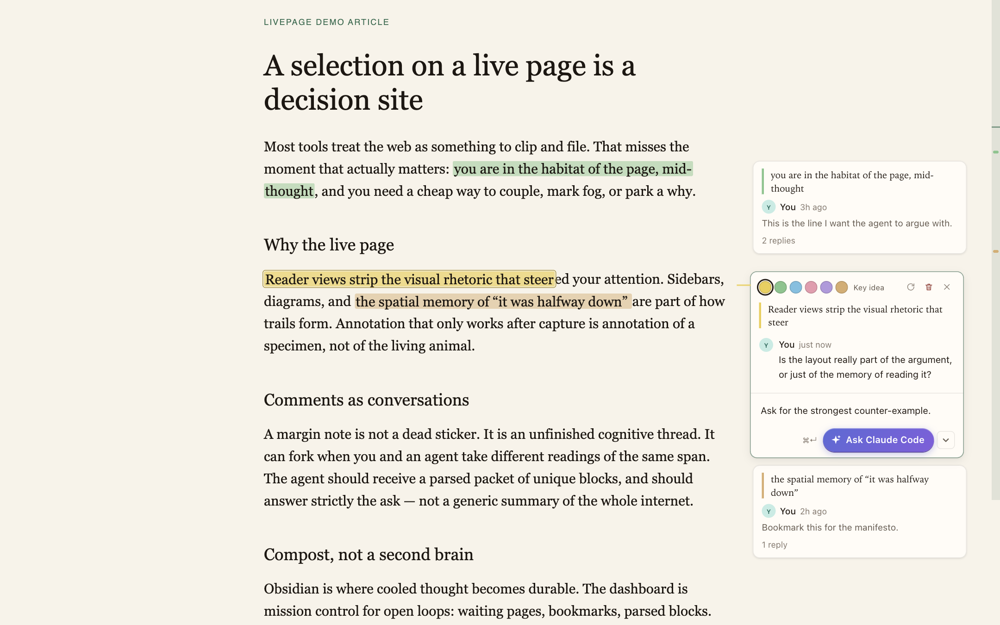
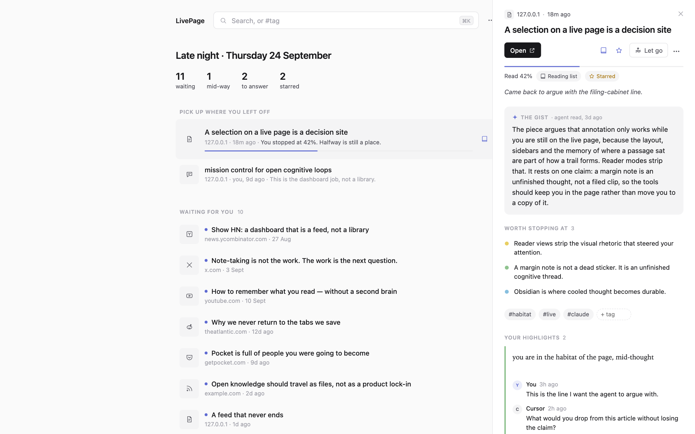
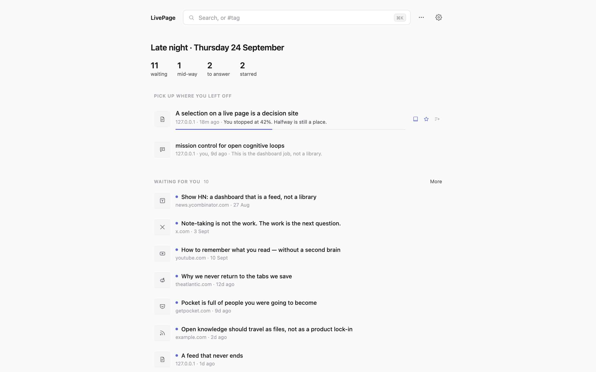
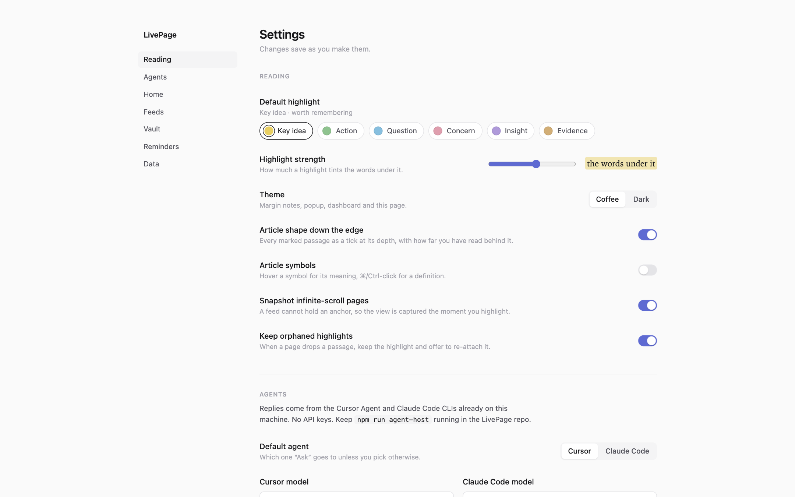

The page stays live. Your thoughts stay on it.
An agent reads the long thing ahead of you and marks what is worth stopping at. You highlight, argue in the margin, and hand a question to Cursor or Claude Code without leaving the page. A home screen keeps what is still waiting on you, and lets you let go of what is not.
Not on the Chrome Web Store. It loads into the Chrome you already use, signed in as you already are.

The margin sits beside the sentence, not at the edge of the window.
Select a span and a quiet toolbar offers six colours and a comment. The card lands next to the paragraph it belongs to, joined by a short line in its colour. On a split screen it folds into a rail of dots and opens over the page, so the article keeps its width.
A thread can fork. You and an agent can take different readings of the same span without overwriting each other. Ask goes to the Cursor or Claude Code CLI already on your machine, with the page's links in hand so the agent can go and check rather than guess.
An agent marks the passages worth stopping at, and says what the piece argues.
Press ⌥A on an article and an agent reads it, writes the argument in plain words above the first paragraph, and marks the claims and what they rest on in the same six colours. Every quote is checked against the article before it is painted, so nothing approximate lands on the page.
Its marks are dotted, because they are not yours until you keep one. Down the right edge is the article's shape: every marked passage as a tick at its depth, with how far you have actually read shaded behind it.


One calm column of what is actually waiting on you.
Nothing is stored just because you opened it. A page is kept the moment you highlight, star, list, tag or import it, so the counts mean something. Pick up where you left off comes first, then what is waiting, then a thread that needs your reply.
Some of it will stop being interesting. Let go, and the page stops counting as waiting without being deleted. It stays findable, and Undo is right there for six seconds.
Every switch says what it does, and saves as you flip it.
Reading, agents, home layout, feeds, vault, reminders and data, in one column with a section rail. The six colours are real swatches, the layouts are small drawings you click, and the agent host shows whether it is reachable.
The host also keeps a copy of everything you write in a database on your machine, beside its pairing token. The browser is still what LivePage reads. The copy is there so a wiped profile is no longer the end of your highlights.

What's new
A redesign of every surface you look at, and the first step of moving the store out of the browser.
- The margin card sits beside the text, tapers on narrower windows, and folds to a rail on a split screen. Resize is smooth.
- Home replaces the portal dashboard: one column, pick up where you left off, waiting for you, rooms as tabs, tools in a menu.
- The side pane shows the agent's gist and the passages it marked, then your highlights and threads, with a reply box.
- Let go of a page from any row or the pane. It stops counting as waiting, stays findable, and Undo lasts six seconds.
- Settings rebuilt in the same tokens, saving as you change things, with a live host pill and layout drawings.
- The host mirror: every write is queued and carried to a SQLite file the agent host keeps. IndexedDB stays primary for now.
- The send button has a face: a pen for a comment, a spark for an ask, and it lets go of the message on click.
- Article symbols, minimap and PDFs carry over unchanged from 0.3.
Load unpacked into the Chrome you already use.
Homebrew cannot inject an extension into that profile, so there is no formula. Three steps, then it is on every page.
- Clone, then load. Open
chrome://extensions, enable Developer mode, choose Load unpacked and select theextension/folder. Pin LivePage. - Keep the host running.
npm run agent-hostin the repo. It binds loopback only, pairs with the extension on its own, and shells out to the Cursor or Claude Code CLI already on this machine. No API keys. - Read as usual. ⌥A on an article has an agent mark it up. ⌥⇧L opens Home. Reload the extension after
git pull.
git clone https://github.com/abhushansahu/livepage cd livepage npm install npm run agent-host # chrome://extensions → Load unpacked → extension/
Every action has a key.
⌥ is Option on a Mac, Alt on Windows and Linux.
| Action | Default |
|---|---|
| Highlight selection | ⌥H |
| Comment on selection | ⌥M |
| Send the comment, or the ask | ⌘↵ |
| Mark up this article | ⌥A |
| Read this article again | ⌥⇧A |
| Next / previous marked passage | ⌥J / ⌥K |
| Explained terms off for this site | ⌥S |
| Open Home | ⌥⇧L |
| Add to reading list | ⌥⇧R |
Honestly.
It is an extension, not a browser. It cannot rewrite navigation, and it runs on every http(s) page because the product is “think on the live web.”
Highlights are text quotes, not positions. A page that rewrites a paragraph can leave one with nowhere to sit. It waits in a dock with its thread, and you can re-attach it by selecting the passage where it lives now. Infinite-scroll feeds are snapshotted the moment you highlight.
Agents cost a real call. Marking up an article shells out to the Cursor or Claude Code CLI on your machine. Nothing runs when you merely open a page; an article already read repaints for free.
Harvest uses this Chrome's sessions. X bookmarks, Reddit saved and YouTube Watch Later come from the profile you are already signed into. Nothing is sent anywhere.
PDFs open in LivePage's reader, never by hijack. The popup and the link menu offer it. A scanned PDF has no text layer to select, and LivePage says so.
The host's copy is a mirror, not yet the store. It receives every write from now on; it does not backfill what was already in the browser, and LivePage does not read from it yet. The vault dump remains one way.